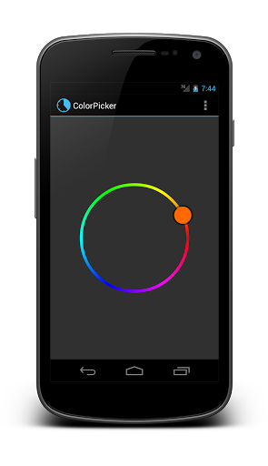

/* Моя кошка замечательно разбирается в программировании. Стоит мне объяснить проблему ей - и все становится ясно. */
John Robbins, Debugging Applications, Microsoft Press, 2000

/* Моя кошка замечательно разбирается в программировании. Стоит мне объяснить проблему ей - и все становится ясно. */
John Robbins, Debugging Applications, Microsoft Press, 2000
Java-библиотеки позволяют хранить код для какой-то задачи в одном месте и использовать в разных проекта, просто подключая ее.
Общий алгоритм подключения библиотеки следующий:
Во многих случаях я просто тащу из Проводника значок библиотеки в окно Eclipse и бросаю его в папку libs. И библиотека автоматически прописывается. Но иногда почему-то такой фокус не проходит.
В Android Studio проще подключать через Gradle. Просто добавляем строку в блок с зависимостями и студия сама скачает и установить библиотеку.
CircleImageView - компонент для создания круглых аватаров
Card Library - интересная библиотека для создания карточек. Автор библиотеки рассказывает о ней на своей странице. А на ГитХабе сама библиотека в исходных кодах. Сам ещё не использовал, но демо библиотеки мне понравилось.
OpenCV. Компьютерное зрение Закрытая зона/6-й месяц
svg-android - работа с векторными изображениями SVG
jsoup - парсинг HTML-текстов
opencsv - парсинг CSV-файлов
Android-Query (AQuery) - простой способ использования асинхронных задач и управления UI-элементами
Библиотека Android Asynchronous Http Client - мощная библиотека для асинхронных запросов.
Universal Image Loader - библиотека для загрузки изображений из сети или локальных носителей
Picasso - ещё одна хорошая библиотека для загрузки изображений с разнообразным функционалом.
koush/ion - и ещё одна популярная библиотека для асинхронных соединений и загрузок изображений.
AChartEngine - библиотека для рисования графиков
aFreeChart - рисуем графики и диаграммы
Androidplot - ещё одна библиотека для рисования графиков
GraphView - ещё одна библиотека для графиков. Доступны два вида. Встраивается в разметку активности через код.
HoloGraphLibrary - Ещё одна библиотека для рисования графиков.
MessageBar - библиотека для замены всплывающего сообщения Toast. Основные особенности - выводится на экран в течение 5 секунд и может содержать кнопку.

SlidingMenu - библиотека с открытыми исходниками для создания меню, которое вызывается с края экрана. В Goggle Play можно скачать демо с примерами.
DashClock - замена часам на экране блокировки для Android 4.2+. Можно добавить не только часы, но и почту, календарь, погоду и др.

Проект открытый с исходниками. Демонстрационный пример можно скачать на Google Play.
Можно писать собственные расширения для библиотеки. Есть документация для расширений.
Примеры расширений:
How to write a DashClock Extension: Battery Extension example
How to write a DashClock Extension: Whatsapp Extension example
How to write a DashClock Extension: Dial Extension example
Learning from DashClock: How to display information about your next calendar appointment
Библиотека с использованием эффекта параллакса. Вы прокручиваете длинный текст, а задний фон прокручивается чуть медленнее. Возможно, кому-то пригодится.
Библиотеку ParallaxScrollView можно скачать на GitHub. Там же можно скачать готовое демо и просмотреть в действии.
Библиотека Android Holo ColorPicker позволяет выбрать цвет с помощью цветового колеса. Страница проекта

Библиотека для создания анимации листания. Сам не пробовал, но смотрится любопытно.